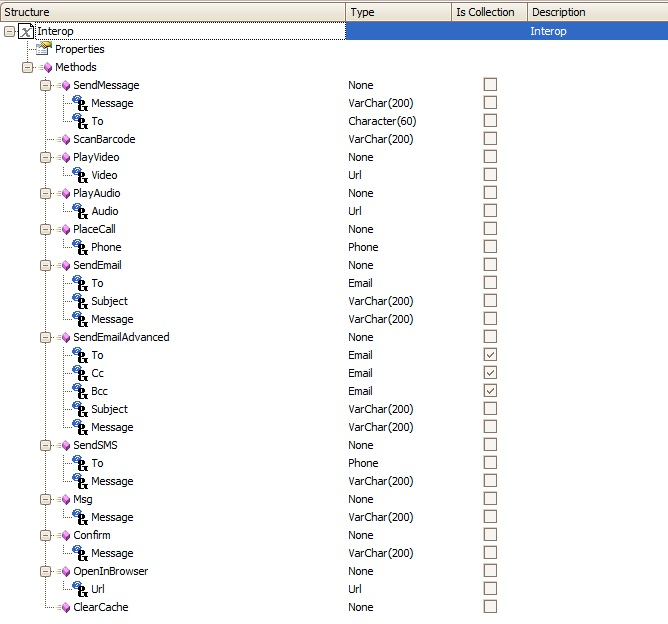
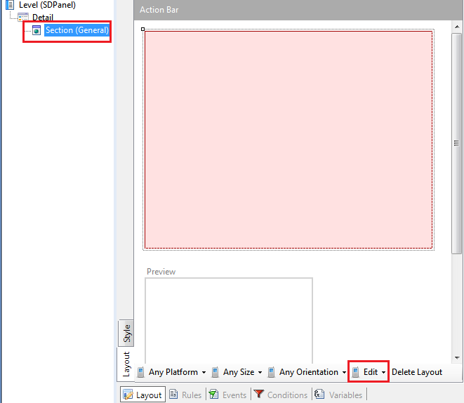
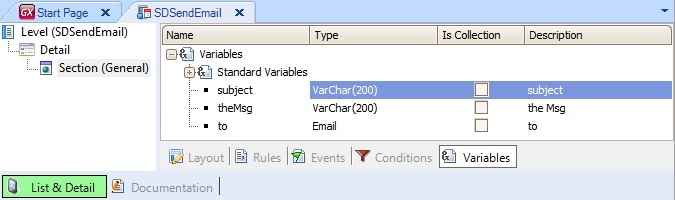
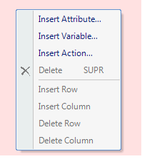
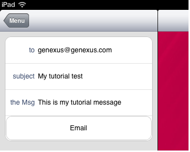
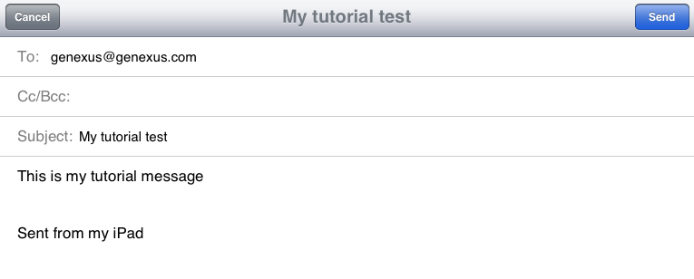

The Interop External Object which can be found under the folder Smart Devices Api provides several methods to interact with the device where the app is executing.  The SendEmail method provides us a way to send an email from our application. When this method is executed it opens the native email application of the device with a new email ready to be sent. You can call the method with three parameters:
This article will show an example of how this feature is used. Firstly, create a new Panel for Smart Devices object (i.e.called SDPanel):  Add a variable based on the Email domain, and one variable based on VarChar(200) to the SDPanel for the message and other for the subject (in sendEmail method it doesn't matter the size of the varchar parameters passed to it, even though it asks for a varchar(200), it could receive a message of any size, for example bigger than 200). The variable based on Email is going to be the destinatary of the email.  Add the variables to the Section General (right click/Insert Variable) and add a new Action to the Layout (right click/Insert Action).  Make sure the variables has the property Readonly = False On the event of the action (to go to the event of the action: double-click on the button) add the following code:
Event 'Email'
Interop.SendEmail(&to,&subject,&theMsg)
EndEvent
Done! The entry panel will accept an email and a msg when the button Send is tapped an email with the parameters in the To and Content field is going to be invoked.  
|
| Backlinks | ||
| HowTo: Using SendEmailAdvanced from Interop in SDApi for Smart Devices | Interop external object | Interop external object (GeneXus 15) |